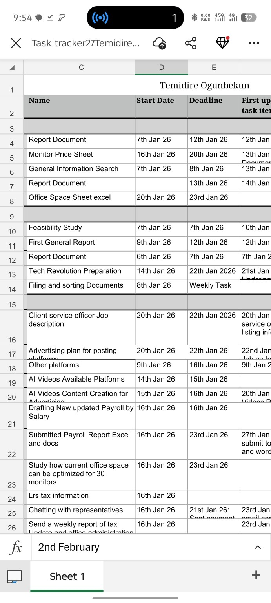
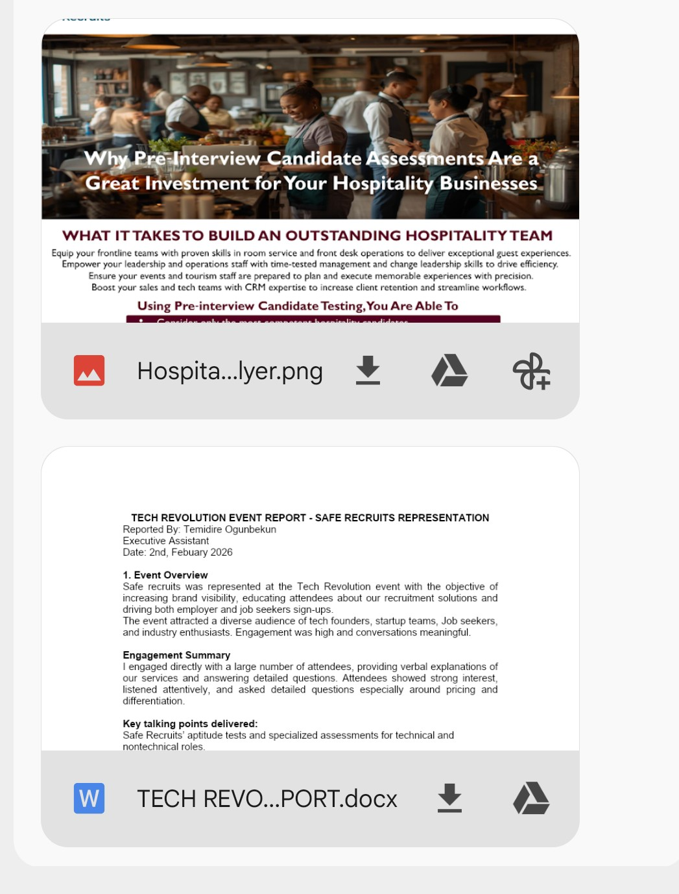
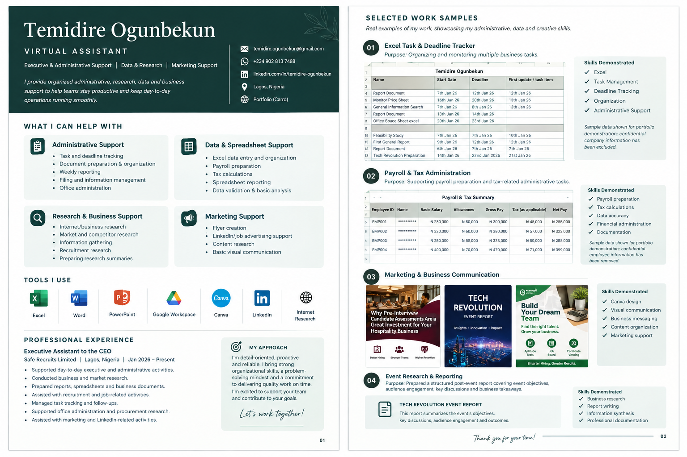

Administrative Support
Task tracking, document preparation, filing, reporting and day-to-day office administration.
VIRTUAL ASSISTANT • EXECUTIVE & ADMINISTRATIVE SUPPORT
I support teams with administrative coordination, research, spreadsheets, reporting, recruitment support and marketing materials — combining strong organization with a technical data background.
Virtual Assistant
WHAT I CAN HELP WITH
Task tracking, document preparation, filing, reporting and day-to-day office administration.
Excel organization, payroll preparation, calculations, reporting and data validation.
Internet research, market research, information gathering and concise research summaries.
Flyer creation, LinkedIn support, content research and basic visual communication.
SELECTED WORK
Real examples demonstrating administrative, reporting and creative support skills. Confidential information should be removed before public sharing.

Organized and monitored multiple business tasks, deadlines, updates and follow-ups in Excel.

Created business-facing visual material for a hospitality campaign and prepared supporting event communication.

Supported payroll-related documentation, salary-based calculations and tax information research, with reports organized in Excel and supporting documents.
Portfolio presentation uses sanitized/sample information. No confidential employee data is published.
EXPERIENCE
Safe Recruits Limited · Lagos, Nigeria · Jan 2026 – Present
TOOLS
MY APPROACH
I bring strong organizational skills, careful attention to detail and a practical problem-solving mindset to every task. My goal is to reduce administrative workload and help teams stay on top of priorities.
GET IN TOUCH
Available for virtual assistance, executive support, administrative coordination, research and data-focused support.